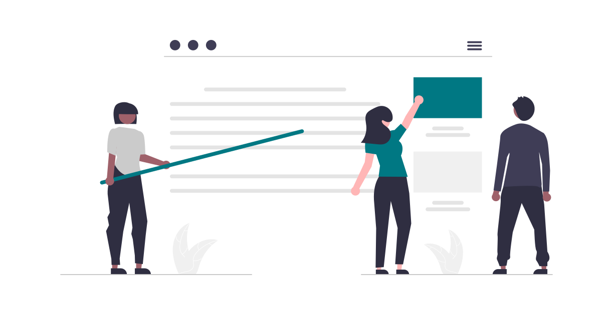
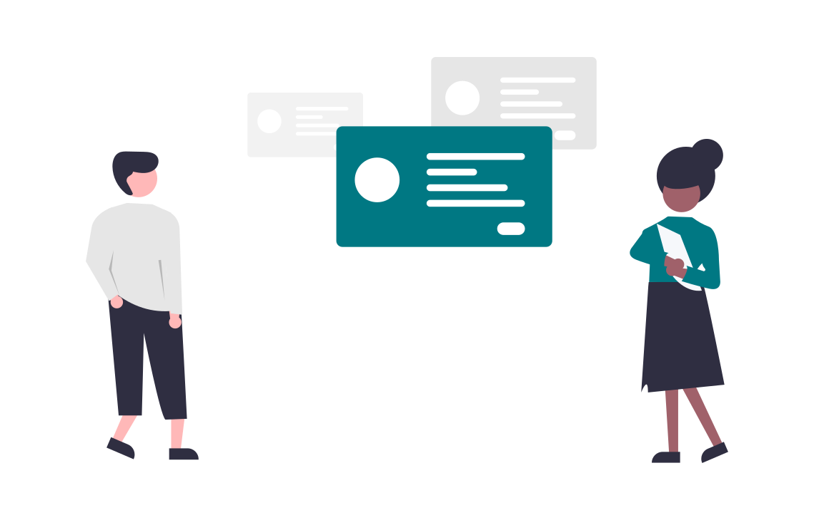
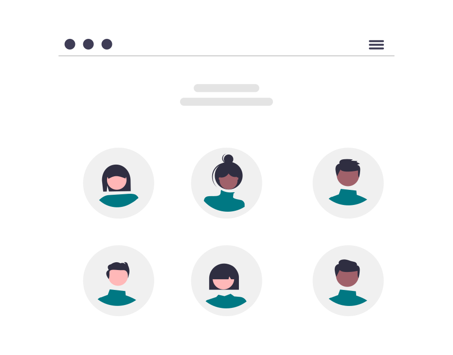
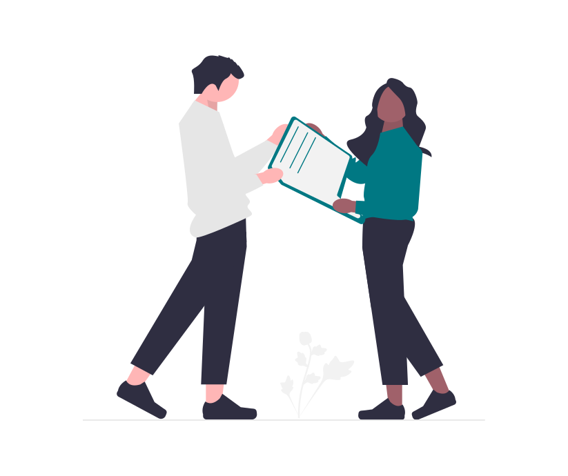

Management inclusif
Équité, reconnaissance, décisions, feedback et coopération au quotidien.
Découvrir les situationsSélectionnez, remplacez et personnalisez des situations existantes : vous ne partez jamais d'une page blanche.
Équité, reconnaissance, décisions, feedback et coopération au quotidien.
Découvrir les situations
Stéréotypes, micro-agressions, comportements sexistes et prévention.
Découvrir les situations
Recrutement, intégration, accessibilité et maintien dans l'emploi.
Découvrir les situations
Préjugés, représentations, équité et inclusion au quotidien.
Découvrir les situations
Inclusion, expressions de soi, alliances et discriminations ordinaires.
Découvrir les situations
Comprendre, respecter la neutralité et gérer les situations sensibles.
Découvrir les situations
Coopération, transmission, représentations entre générations.
Découvrir les situations
Comportements du quotidien, coopération, vigilance et posture inclusive.
Découvrir les situations